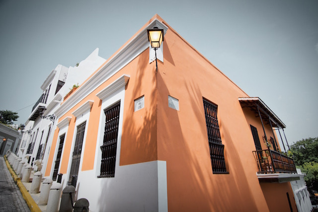

Hola!
About Puerto Rico
Puerto Rico will be my final destination. I chose this country because I have a lot of family that lives there and I have not gotten the opportunity to ever visit them. Once I arrive in Puerto Rico I definitely want to visit San Juan. San Juan is the capital and most densely populated city in Puerto Rico. San juan is known as La Ciudad Amurallada (the walled city) and is one of the biggest and best natural harbors in the Caribbean. Old San Juan has several plazas including:Plaza de San José, Plaza del Quinto Centenario, Plaza de Armas, and Plaza de Colón. I definitely plan on visiting all of these locations and learning more about the history that came behind each of the plazas. Did you know that the red stripes on the Puerto Rican Flag are symbolic of the “blood” that nourishes the three branches of its government? Including: Legislative, Executive, and Judiciary.
Best Places to Visit in Puerto Rico
1. Bioluminescent Mosquito Bay
Read More: The Perfect Beach Experience for Your First Visit2. El Yunque National Rainforest
Read More: The Natural Wonders of Puerto Rico- El Yunque National Rainforest
3. San Juan
Read More: Touring the Streets of San Juan, Puerto Rico 4. El Morro
Read More: Exploring El Morro Fort in Puerto RicoTypical Puerto Rican Food
- Mofongo: Deep-fried green plantains mashed together with sautéed onion, garlic, olive oil and other ingredients such pork or seafood.
- Pernil: Slow-roasted marinated pork shoulder.
- Arroz con gandules: A combination of rice, pigeon peas, and pork - It is one of the signature rice dishes of Puerto Rican cuisine.
- Pastelón: Sweet plantains mashed together and layered with ground beef much like lasagna.
- Alcapurrias: Deep-fried "fritters" filled with savory ground meat or fish.